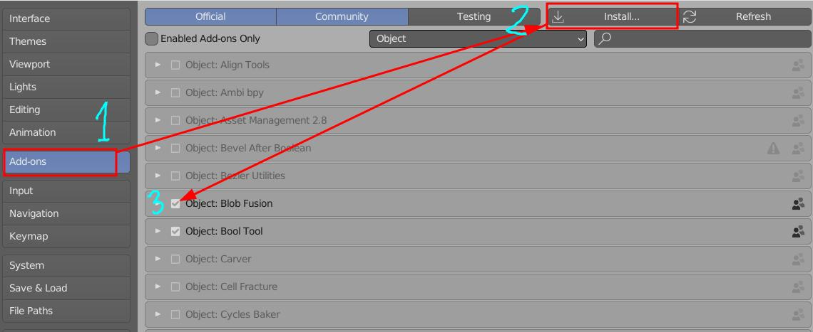
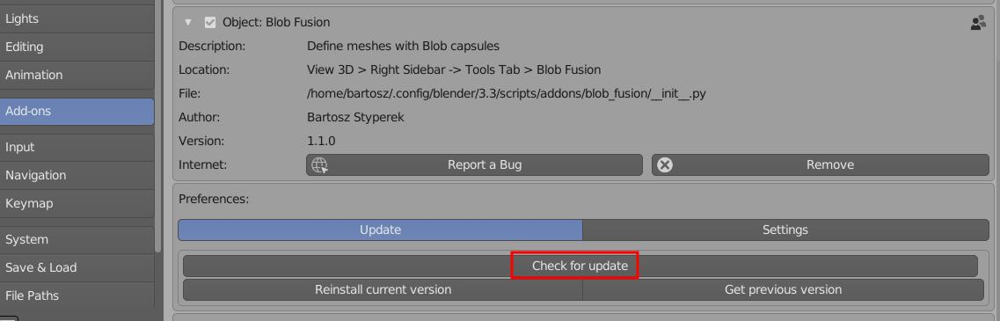

Blob Fusion¶
Blob Fusion¶
Blob Fusion is add-on for Blender 3.6 and 4.x, targeted for base-meshes creation. It can be thought as mix of ZSpheres with Metaballs (Signed Distance Fields), combining best of both worlds. I wished for this kind of workflow being possible, for quite some time.
Features¶
- Model your characters using two primitives: Sphere and Round cone Blobs
- Auto-generated hierarchy of objects (rig like) is created, when adding new Blob
- Library of presets for quick start (human, animal, etc.),
- Blobs blending control that allows to get organic results
- One click Symmetrical setup,
- Easy to use: extrude, subdivide, connect and duplicate is all you need to model
- One click Armature generation
Video Tutorial¶
Blob Fusion 1.0 release video where basics of blobs modeling are shown (extruding, subdividing, connecting, duplicating blobs etc.)
Blob Fusion 1.5 Update video where I show new Dynamic Bounding Box and library of presets features
Installation¶
To install Blob Fusion you need zip file from your Gumroad account. Then, inside Blender, go to:
- Edit > Preferences > Add-ons, and click 'Install' button.

And navigate to BlobFusion.x.zip file location.
Updating¶
Blob Fusion has build in auto updater. When you use it, updater will download latest Blob Fusion release and install in background. To use auto updater go to:
- Edit -> Preferences -> Add-ons -> Blob Fusion -> press 'Check for update'.
 In new version is found, press 'Update add-on' button, wait few seconds for download, installation and restart blender. Or you download update manually by getting new zip file from your Gumroad account. You should have received download link to zip file, with email when you purchased Blob Fusion.
Note - Sometimes I upload smaller, incremental updates, without version bump. In that case, even if you have the latest version of Blob Fusion, you may try to update anyway - using Reinstall Current Version
Support¶
For support or bug reports use this discord server.